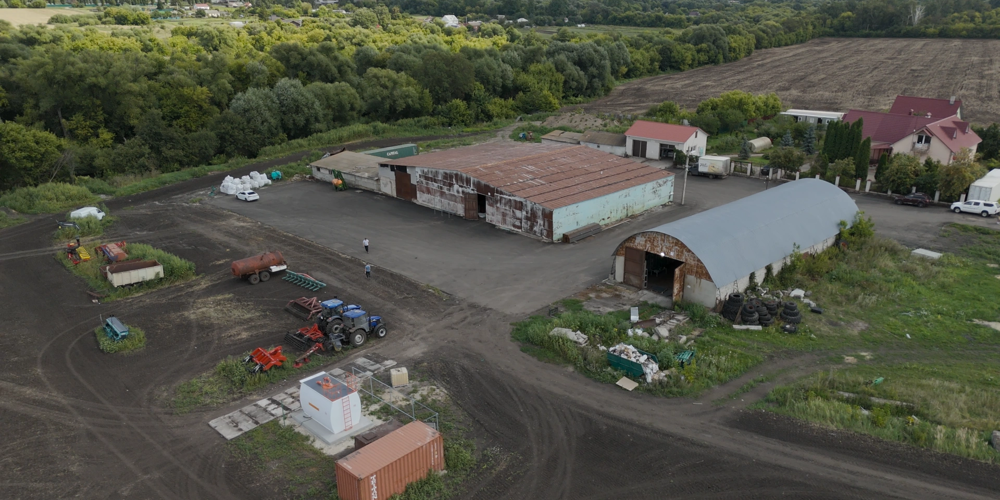
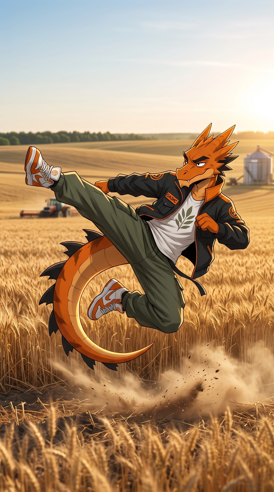
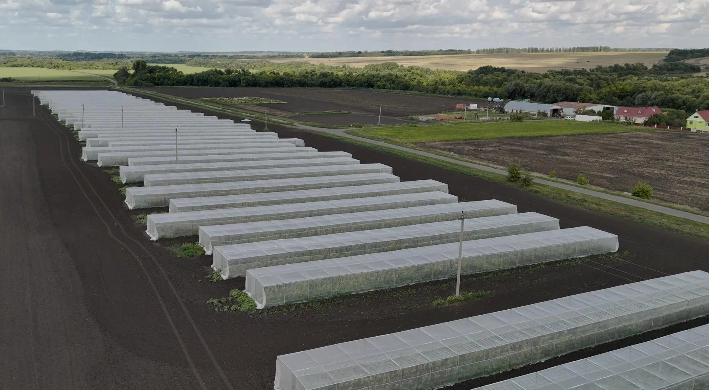
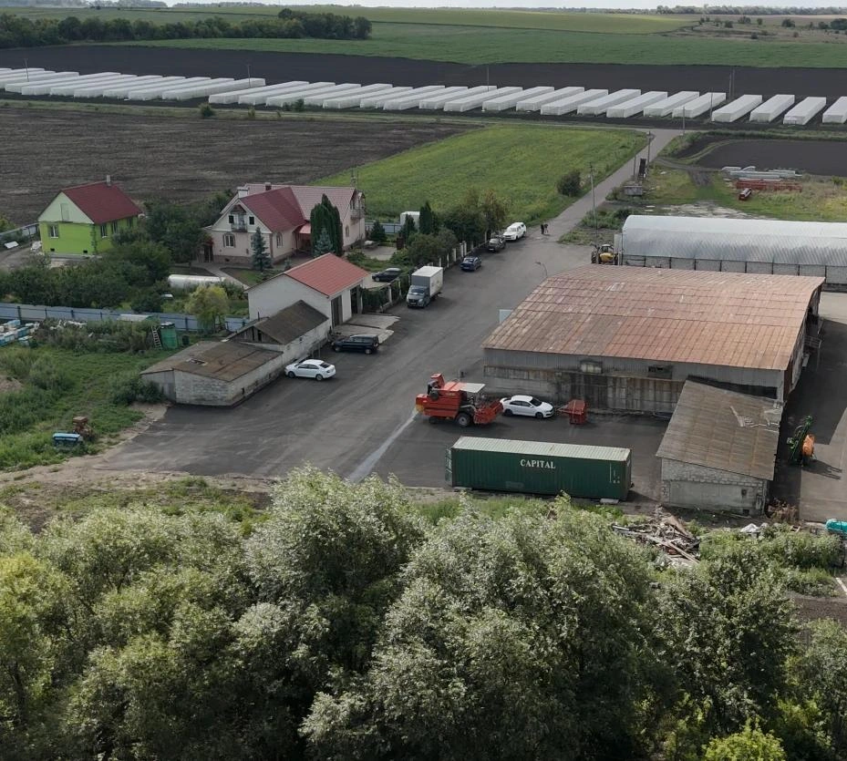
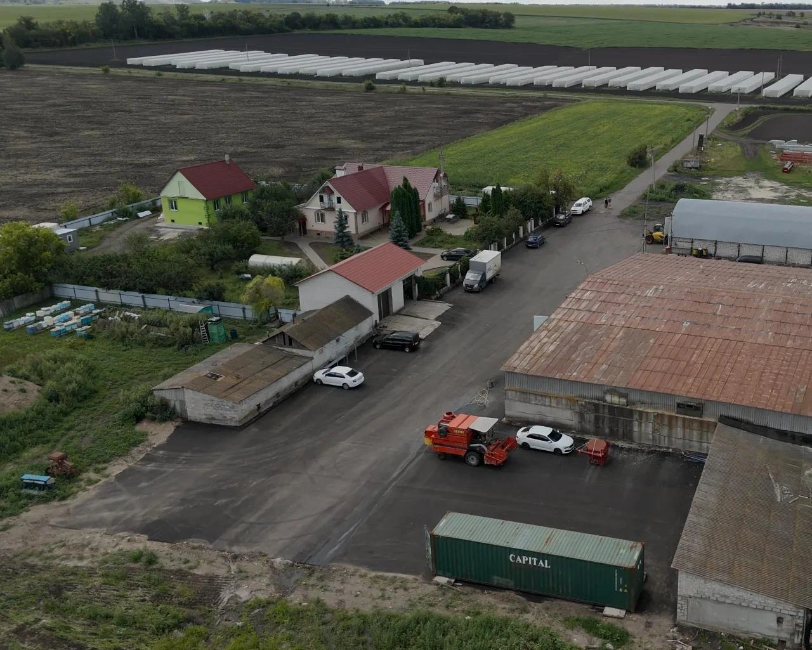
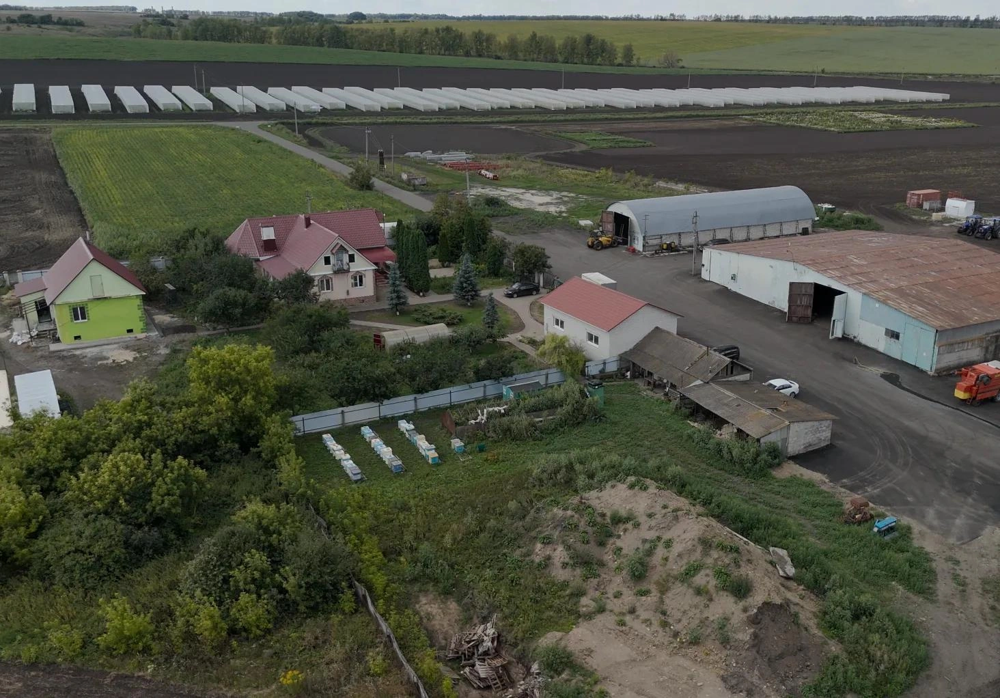
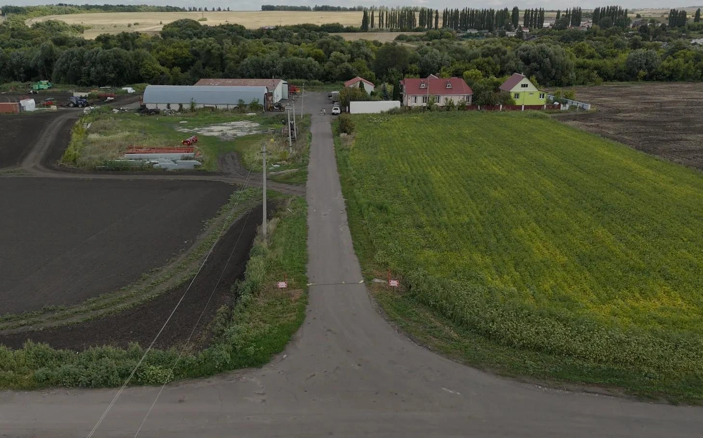
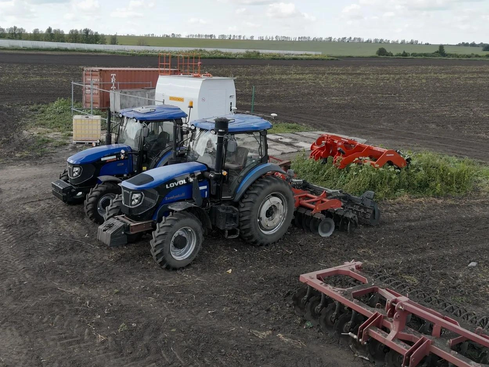
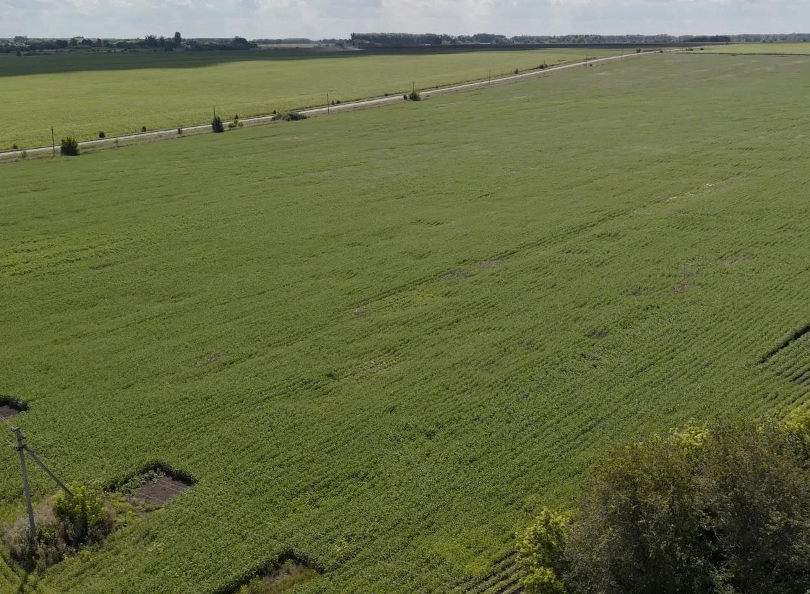

О.А.З.И.С
Органическое адаптивное земледелие и семеноводство
О.А.З.И.С — это не просто семеноводческая компания. У нас своя земля, техника, семена. Мы растим с душой, работаем за идею, идем к новым свершениям в селекции.

Наши поля







